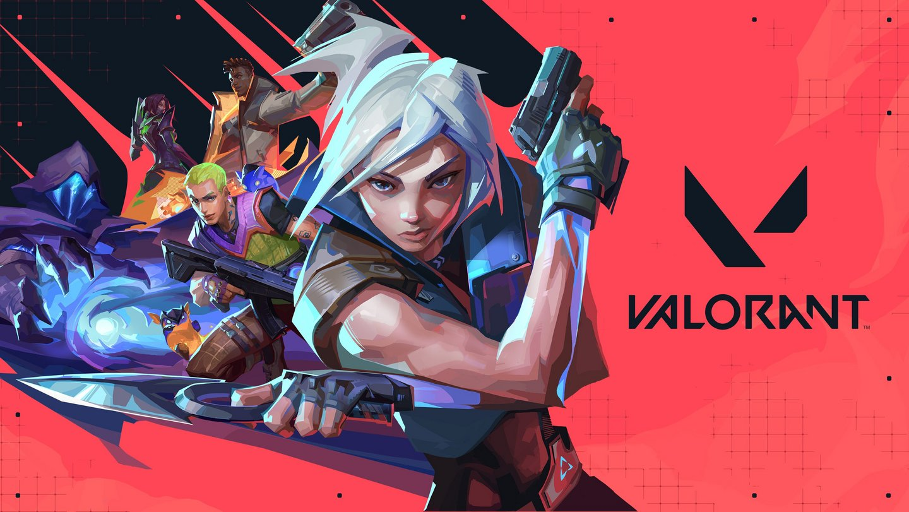

Tiro
Valorant
Jogo de tiro tático 5x5 em que cada agente tem habilidades próprias.
Quando tenho tempo, passo horas jogando e passando raiva com meu time ruim. É um jogo que me estressa e me traz felicidade ao mesmo tempo ( Relação de Amor e Ódio )